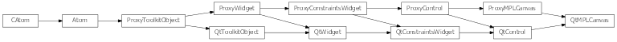

Bases: enaml.widgets.control.Control
A control which can be used to embded a matplotlib figure.
The matplotlib figure to display in the widget.
Whether or not the matplotlib figure toolbar is visible.
Matplotlib figures expand freely in height and width by default.
A reference to the ProxyMPLCanvas object.

Bases: enaml.qt.qt_control.QtControl, enaml.widgets.mpl_canvas.ProxyMPLCanvas
A Qt implementation of an Enaml ProxyMPLCanvas.
A reference to the widget created by the proxy.